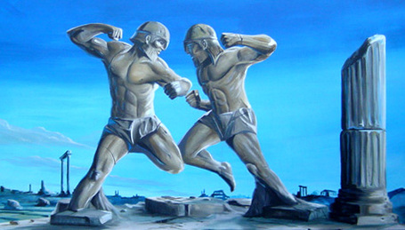

Dlaczego tak ją lubie?
Moją ulubioną dyscypliną jest bezprecedensowo boks. Uwielbiam ten sport ze względu na ograniczenie, które pozwala nam zadawać ciosy tylko pięściami. Sprowadza się to do większego myślenia podczas walki, staje się ona bardziej taktyczna, oraz większych umiejętności samego zawodnika. Boks wymaga również większego sprytu i opanowania. Najbardziej śledzę walki wagi królewskiej (ciężka-heavyweight)
Może coś o historii boksu
Sport, w którym dwóch zawodników walczy ze sobą używając tylko pięści (to już wiemy). Co więcej taki typ walki jest najstarszy ze sportów, bo już występował w starożytnej Grecji i w Cesarstwie Rzymskim.Statyczne bijatyki dwóch zawodników były bardzo brutalne i czasem kończyły się śmiercią. Walki te, toczone z minimalną ilością reguł, niewiele miały wspólnego z boksem − sportem, jaki narodził się w 1719 roku w Anglii. Wówczas to James Figg, uznawany za pierwszego w historii mistrza Anglii, założył przy Tottenham Court Road w Londynie akademię boksu. Walczący nie nosili rękawic i zadawali ciosy dopóki któryś z nich nie został znokautowany lub opadł z sił. Jack Broughton, który w 1730 roku zastąpił Figga, przez 18 lat zachował mistrzowski tytuł i jako pierwszy skodyfikował podstawy zasad tego sportu. Wstrząśnięty śmiercią na ringu jednego ze swych przeciwników, George’a Stevensona, sformułował i wprowadził w życie zbiór zasad znany jako Broughton’s Rules, które w I połowie XIX wieku zostały zastąpione przez London Prize Ring Rules. Zręby współczesnego zawodowego boksu wywodzą się od opublikowanych w 1867 roku w Wielkiej Brytanii zasad zwanych Queensberry Rules, które po raz pierwszy wprowadziły wymóg zakładania rękawic. Początkowo współistniały one z zasadami londyńskimi, jednak do końca XIX wieku praktycznie je wyparły i walki w rękawicach stały się standardem (np. od 1889 roku bezwzględnie obowiązują one w USA). Symbolem tych przemian stał się John L. Sullivan − uznawany za ostatniego mistrza w walce na gołe pięści, a zarazem pierwszego mistrza świata wagi ciężkiej w walce w rękawicach. W roku 1916 podjęto ważną decyzję o ograniczeniu oficjalnych zawodowych walk o mistrzostwo świata do 15 rund po trzy minuty każda, z jednominutowymi przerwami. W latach 80 XX wieku, wskutek tragicznej śmierci koreańskiego boksera Kim Duk-koo, zawodowe walki ograniczono do 12 rund.
Zasady
Boks jest to walka dwóch zawodników na pięści w specjalnych rękawicach. Walka odbywa się na ringu w kształcie kwadratu o boku długości 4,3m - 6,1m (dla zawodowców) i 4,9m - 6,1m (dla amatorów). Nad przepisowym odbywaniem się pojedynku czuwa arbiter znajdujący się na ringu oraz po za ringiem 3 (zawodowcy) lub 5 (amatorzy) sędziów punktowych. Walki trwają przeważnie 12 rund w zależności od ilości zakontraktowanych rund w danej walce. W boksie amatorskim są tylko 3 rundy. Jedna runda trwa 3 minuty a przerwa 1 minutę. Zakończenie walki i wygranie jednego z walczących może zakończyć się prze nokaut (KO) gdy zawodnik upadnie na deski ringu i odliczy zawodnika do 10. Drugą możliwością zakończenia walki jest nokaut techniczny (TKO), gdy sędzia przerwie walkę stwierdzając kontuzje lub bardzo dużą przewagę jednego z zawodników oraz gdy zawodnik upadnie 3 razy w ciągu rudny. Zawodnik może wygrać również na punkty lub zremisować gdy walka nie rozstrzygnie się przed czasem.
Podstawowe ciosy i pozycje
→ Ciosy proste - ciosy bokserskie najczęściej stosowane w walce, charakteryzujące się duża szybkością i skutecznością, stosowane są w ataku na dystans i w półdystansie oraz jako kontr ciosy w obronie. Rozróżnia się cztery podstawowe ciosy proste: lewy prosty na górę (w głowę), lewy prosty na dół (w tułów), prawy prosty na górę (w głowę) oraz prawy prosty na dół (w tułów). W angielskiej terminologii bokserskiej cios wykonywany tą ręką, po której stronie znajduje się wysunięta do przodu noga określa się jako ‘jab”, zaś przeciwną ręką jako “cross”.
→ Ciosy sierpowe - ciosy boczne, które dochodzą do przeciwnika z boku, trafiając w boczne części głowy oraz tułów, stosowane najczęściej w półdystanse, ciosy sierpowe charakteryzują się silną pracą skrętną tułowia z przeniesieniem ciężaru ciała w kierunku ciosu przy współudziale pracy nóg, bioder i barków. Podstawowymi ciosami sierpowymi są lewy sierpowy, prawy sierpowy, lewy sierpowy wydłużony oraz prawy sierpowy wydłużony. W angielskiej terminologii określane jako “hook”.
→ Ciosy z dołu (podbródkowe, haki) - ciosy bokserskie zadawane są ręką ugiętą w łokciu, stosowane w półdystansie i w zwarciu, w ataku i obronie, podstawowymi ciosami z dołu są prawy z dołu i lewy z dołu. W angielskiej terminologii określane jako “uppercut”.
→ Odskok - bokser wychodzi poza zasięg ciosów przeciwnika przez odbicie z obu nóg. Odskok jest skuteczną obroną bierną przed każdym rodzajem ciosów.
→ Odchylenie - cofnięcie tułowia poza zasięg ciosów przeciwnika, przy czym nogi i biodra ustawione w pozycji bokserskiej pozostają nieruchome, odchylenie, stosowane jest w obronie przed ciosami prostymi na górę oraz ciosami sierpowymi
.→ Garda – element obrony biernej; polega na takim ustawieniu rękawic i przedramion, by chroniły boksera przed ciosami przeciwnika.
→ Zakrok - cofnięcie nogi w celu uniknięcia ciosu i następnie wyprowadzenia kontry.
Wyposażenie każdego boksera
→ Ochraniacze podbrzusza – inaczej suspensoria, jest to podpaska mosznowa wykonana z tkaniny elastycznej w kształcie woreczka przymocowanego tasiemkami do paska opasującego biodra, ochraniacz stosowany jest obowiązkowo.
→Ochraniacze zębów i warg – tzw. gumowa szczęka, część wyposażenia osobistego boksera, wykonane są z miękkiego tworzywa (najczęściej kauczuku) w kształcie półokrągłej rynienki, którą można dopasować do górnej szczęki, ochraniacz ten zabezpiecza przed utratą zębów i rozbiciem warg, gdyż siła ciosu jest amortyzowana przez miękką i gładką powierzchnię; ochraniacz stosowany jest obowiązkowo.
→ Buty – buty sznurowane sięgające powyżej kostki, wykonane z miękkiej skóry, z cienką podeszwą gumową bez obcasa; nie powinny posiadać żadnych usztywnień i części metalowych.
→ Spodenki – wykonane z materiału np. płótna, popeliny lub grubego jedwabiu, sięgają do połowy uda i posiadają pasek szerokości około siedmiu centymetrów, wykonany z trzech lub czterech gum oddzielnie wszytych w materiał innego koloru niż spodenki.
→ Rękawice bokserskie – podstawowy sprzęt boksera, rękawice wykonane są ze skóry, wewnątrz posiadają wyściółkę z włosia końskiego lub spienionego poliuretanu, która stanowi minimum 50% masy całych rękawic; zastosowanie wyściółki ma na celu amortyzowanie siły ciosu i dlatego musi być ona umocowana na stałe, nie może się przesuwać ani zmieniać kształtu. Od wewnątrz rękawice wykończone są płótnem, powinny być możliwie nowe, czyste i jednakowe dla obu zawodników.
→ Owijka (tzw. bandaże lub taśmy) – specjalne bandaże, zakładane na dłonie pod rękawice bokserskie, ich zadaniem jest wchłanianie potu oraz stabilizacja nadgarstka i kości śródręcza, co pomaga zapobiegać kontuzjom.
Kategorie wagowe
→ Kategoria słomkowa Strawweight do 105 funtów (do 47,627 kg
→ Kategoria junior musza/lekkomusza Light Flyweight do 108 funtów (do 48,998 kg)
→ Kategoria musza Flyweight do 112 funtów (do 50,820 kg
→ Kategoria junior kogucia/supermusza Superflyweight do 115 funtów (do 52,163 kg
→ Kategoria kogucia Bantamweight do 118 funtów (do 53,524 kg)
→ Kategoria junior piórkowa/superkogucia Superbantamweight do 122 funtów (do 55,338 kg)
→ Kategoria piórkowa Featherweight do 126 funtów (do 57,153 kg)
→ Kategoria junior lekka/superpiórkowa Superfeatherweight do 130 funtów (do 58,967 kg
→ Kategoria lekka Lightweight do 135 funtów (do 61,235 kg)
→ Kategoria junior półśrednia/lekkopółśrednia Lightwelterweight do 140 funtów (do 63,503 kg)
→ Kategoria półśrednia Welterweight do 147 funtów (do 66,678 kg)
→ Kategoria junior średnia/superpółśrednia Superwelterweight do 154 funtów (do 69,853 kg)
→ Kategoria średnia Middleweight do 160 funtów (do 72,575 kg)
→ Kategoria superśrednia Supermiddleweight do 168 funtów (do 76,204 kg)
→ Kategoria półciężka Light Heavyweight do 175 funtów (do 79,379 kg)
→ Kategoria junior ciężka/lekkociężka Cruiserweight do 200 funtów (do 90,719 kg)
→ Kategoria ciężka Heavyweight ponad 200 funtów (ponad 90,719 kg)
Najważniejsze organizacje
→ World Boxing Association (WBA) – międzynarodowa organizacja boksu zawodowego, utworzona w 1962 roku na bazie działającej od 1921 National Boxing Association (NBA). Siedzibą organizacji jest Panama, a jej prezydentem był od 1982 roku do swej śmierci w 2016 roku Gilberto Mendoza. Obecnie na czele WBA stoi jego syn Gilberto Mendoza Jr. Walki organizowane przez WBA odbywają się w 17 kategoriach wagowych.
→ World Boxing Council, WBC – jedna z największych i najbardziej prestiżowych międzynarodowych organizacji boksu zawodowego z siedzibą w Meksyku. Do organizacji należy 161 państw członkowskich. Organizacja boksu zawodowego WBC została utworzona 14 lutego 1963 roku w Meksyku z inicjatywy 12 państw: Stanów Zjednoczonych, Argentyny, Wielkiej Brytanii, Francji, Meksyku, Filipin, Panamy, Chile, Peru, Wenezueli, Portoryko i Brazylii. Jej zadaniem było zjednoczenie wszystkich organizacji bokserskich i kontrola nad dalszym rozwojem boksu zawodowego, organizowanie walk o tytuł mistrza świata, wyznaczanie pretendentów do walk mistrzowskich oraz ustalanie regulaminów bokserskich.
→ International Boxing Federation (IBF) – międzynarodowa organizacja boksu zawodowego utworzona w 1983 roku na bazie USBA (United States Boxing Association) oraz kilku organizacji z Europy i Ameryki Południowej. Założył ją Bob Lee, który przegrał wybory na prezydenta innej organizacji bokserskiej – WBA i razem z grupą działaczy postanowił założyć nową federację. Walki organizowane przez IBF odbywają się w 17 kategoriach wagowych.
→ World Boxing Organization – jedna z najbardziej prestiżowych i największych organizacji boksu zawodowego na świecie. Wyłania ona swoich mistrzów świata, ustala listy rankingowe i przepisy bokserskie.Założona w 1988 roku przez Luis Batista Salas. Siedziba organizacji jest w San Juan w Portoryko.
Idole
Michael Gerald „Mike” Tyson
(ur. 30 czerwca 1966 na Brooklynie w Nowym Jorku) – amerykański bokser. Był dwukrotnym mistrzem świata wszechwag zawodowców (w latach 1986–1990 i w 1996), zostając najmłodszym mistrzem świata w tej kategorii w historii boksu zawodowego w wieku 20 lat, 4 miesięcy i 22 dni; zdobył mistrzostwo świata czterech najważniejszych federacji bokserskich: World Boxing Council, World Boxing Organization, International Boxing Federation i World Boxing Association. Panował jako niekwestionowany mistrz świata w wadze ciężkiej. Ze względu na bardzo agresywny sposób walki zyskał przydomki Bestia i Żelazny Mike. Znany później jako The Baddest Man on the Planet. Tyson wygrał swoje 19 pierwszych profesjonalnych walk nokautem, a 12 z nich już w pierwszej rundzie. Był pierwszym bokserem wagi ciężkiej, który jednocześnie posiadał tytuły WBA, WBC i IBF. Został wprowadzony do Międzynarodowej Galerii Sław Bokserskich i Światowej Galerii Bokserskiej (The International Boxing Hall of Fame oraz The World Boxing Hall of Fame). Prawdopodobnie gdyby nie jego uzależnienia oraz choroba psychiczna (depresja) byłby najlepszym pięściarzem w historii. Na ringu był niesamowity jednak jego wyczyny po za nim psuły jego reputacje. Jego rekord walk wynosi: 50-6. Wzrost: 178 cm. Waga: 106kg.
Tyson Luke Fury
(ur. 12 sierpnia 1988 w Manchesterze) – angielski bokser wagi ciężkiej, aktualny mistrz świata wagi ciężkiej federacji WBC oraz linearny mistrz świata wagi ciężkiej. Jest również posiadaczem pasa magazynu „The Ring”. Były mistrz świata organizacji WBO, IBO, IBF oraz były superczempionem WBA. Były mistrz Wielkiej Brytanii w wadze ciężkiej oraz były mistrz federacji CBC. Tyson Fury został wybrany bokserem 2018 roku według czytelników portalu World Boxing News. W latach 16/18 nie walczył ze względu na problemy z alkoholem i narkotykami. Jego rekord walk wynosi: 30-0-1. Wzrost: 206cm. Waga: 115kg.
Tomasz Adamek
(ur. 1 grudnia 1976 w Żywcu) – polski bokser, były zawodowy mistrz świata organizacji International Boxing Federation (IBF) i International Boxing Organization (IBO) w wadze juniorciężkiej oraz World Boxing Council (WBC) w wadze półciężkiej, medalista mistrzostw Europy amatorów, międzynarodowy mistrz Polski. Zdobywca 2. miejsca w 2005 i 4. w 2006 w plebiscycie na najlepszego sportowca Polski. Założyciel klubu sportowego KS Cios-Adamek w Gilowicach. Jest pierwszym Polakiem, który zdobył „Muhammad Ali Giant Athlete Award”, nagrodę imienia Muhammada Alego za wybitne osiągnięcia sportowe i postawę poza ringiem, a także The Ring championship belt – pas mistrzowski magazynu „The Ring”. Jego rekord walk wynosi 53-6. Wzrost: 188cm. Waga: 102kg.